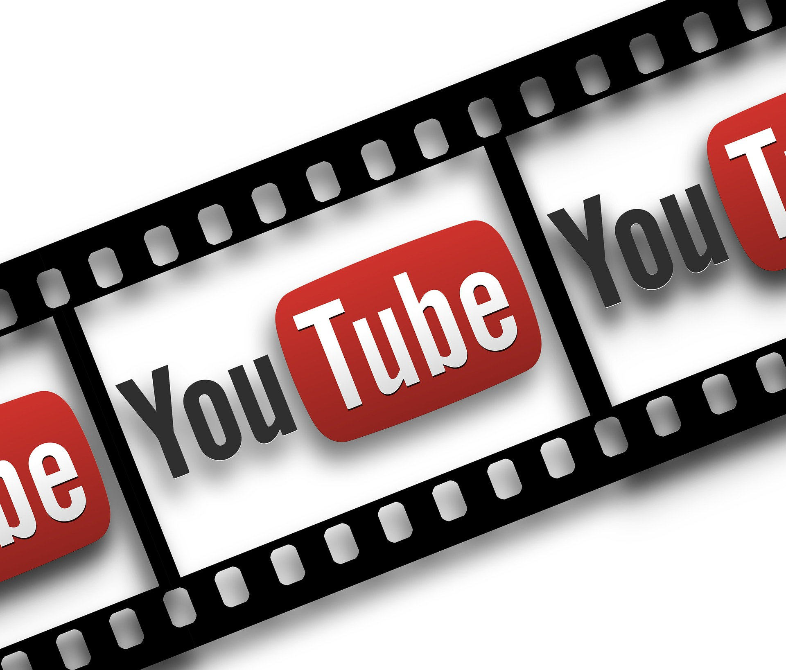

How to become a youtuber?
Do you want to be a youtuber? Well let me give you some tips to help you out!
Do you struggle with thinking up names of your channel or even maybe struggling with video idea? Not sure what catagories could represent your channel?

When deciding on your channel name think of something unique or things that are important to you, make sure you dont use numbers or symbols,this can makeyour channel hard to find
You need something nice and easy to remember so that viewers can return orfind your videos again.
What do you want your channels content to be? Well nowadays you can make videos just about anything. All you need to do is think of what do you enjoy and what would you have fun making
Your channel starts with you, you have tolove what you do and what you create to get the views and love you want.
Don't worry too much about your bio, make it short and sweet, something that can really make your viewers interested in you and your videos
When you first start out try not to put too many catagories, start with two and when you are ready,you can expand when you want.
We hope you found these tips usefull,and hopefully one day you'll be one of the next famous youtubers
Youtube
This is the youtube page, here you can find help on how to become a youtuber, learn about the most trendin videos at the moments and learn information about your favorite youtubers
At the top of the screen is a navigation bar, this wil take you to the pages we think users might be interested in. There is different genres on each page, pick the one or few you like!
You can create posts and add whatever you like, as long as it is suitable to the webpage. Enjoy and have Fun.
Trending Videos
- Football Videos
- News Videos
- Oddly Satisfying Videos
- Music Videos
- Reaction videos
- Weird Food Videos
- Gadgets